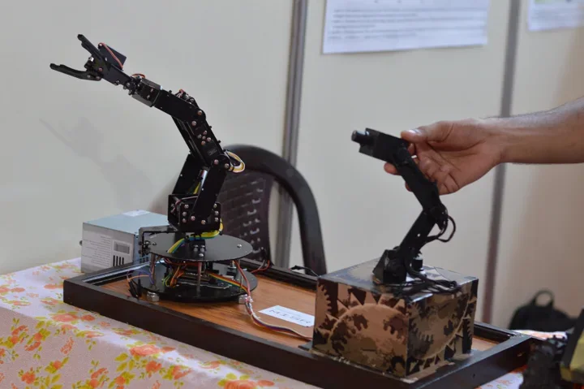

SAKSHA: teaching a robot by moving an arm
Amrita University · India
What if showing a robot a movement were as direct as moving an arm yourself? SAKSHA explored that idea with two linked robotic arms and a record-and-replay workflow.

Let the movement be the instruction
Programming a robot arm often involves moving it through a sequence of positions using a handheld controller, known as a teach pendant. SAKSHA explored a more physical interface: guide one arm and let a second arm follow its joint movements.
The aim was to make the desired motion easier to express. The person demonstrates it through the control arm, and the system translates that demonstration into commands for the working arm.
Two arms connected through their joint positions
The control arm’s joint sensors measured its position. A small Arduino-based controller mapped those readings to servo motors—motors that move to a commanded position—on the follower arm, which reproduced the corresponding movements.
This is a leader–follower arrangement: one arm supplies the instruction and the other carries it out. The original implementation mapped the input signals on a 25-millisecond cycle.
Teach once, then play it back
In teach mode, the follower arm copied the movement of the control arm. Recording stored a sequence of joint-position readings, creating a motion that could be used again.
In play mode, the controller stepped through the stored sequence and drove the follower arm through the recorded motion. The project combined physical interaction, position sensing, and embedded control into a small demonstration of robot teaching.
Watch the project in motion
Watch demonstration 1 on YouTubeWorking on something similar?
If this project connects with a problem or idea you’re exploring, I’d enjoy comparing notes.